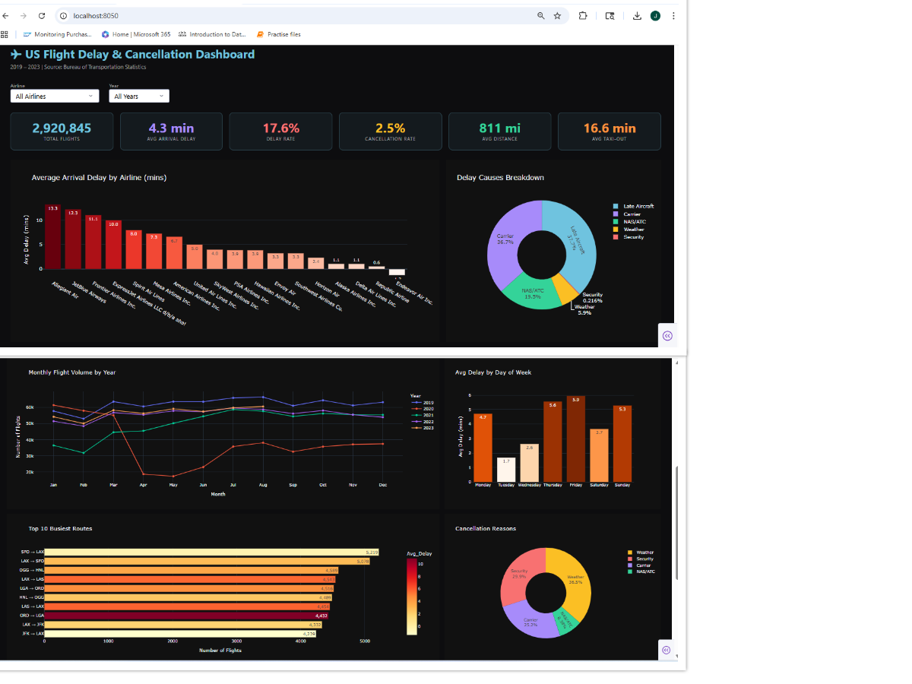

About the Data
Project Goal
After completing my Power BI Netflix project, I wanted to demonstrate that I could build the same quality of analysis entirely in Python — covering data ingestion, cleaning, transformation, KPI computation, and an interactive multi-page dashboard. I chose a real-world aviation dataset sourced directly from the US Bureau of Transportation Statistics (BTS), giving me 3 million+ rows of actual airline operations data across five years. This project showcases pandas for data engineering, Plotly for interactive visualisation, and Dash for a live, filterable web dashboard.
Data Source — Bureau of Transportation Statistics (BTS) via Kaggle
Dataset: Flight Delay and Cancellation Dataset (2019–2023) · 3,000,000 rows · 32 columns · Real US domestic flight records · Years: 2019 to 2023
This project is structured around the same four core questions I applied to the Netflix dashboard:
Python Analysis Pipeline
The project follows a structured four-stage pipeline — the Python equivalent of Power Query → Data Model → DAX → Dashboard in Power BI.
Data Ingestion
Used glob + pandas to load and concatenate multiple yearly CSV files into a single 3M-row DataFrame. Applied usecols to load only the 22 required columns, reducing memory usage significantly.
Data Cleaning
Parsed FL_DATE to datetime, coerced all numeric delay and distance columns, removed duplicates, dropped rows with null airline or date values. Separated cancelled flights from active flights for independent analysis.
Feature Engineering
Created derived columns: IS_DELAYED (ARR_DELAY > 15 mins — FAA standard), YEAR, MONTH, MONTH_NAME, WEEKDAY, and ROUTE (ORIGIN → DEST). These drove all downstream KPIs and aggregations.
Dashboard (Dash)
Built a live interactive web dashboard using Plotly Dash with airline and year dropdowns. All 7 charts and 6 KPI cards update dynamically on filter selection — running at localhost:8050.
Results
The dashboard delivers a comprehensive view of US domestic flight operations across 18 airlines, 7,771 routes, and five years — covering delay patterns, cancellation reasons, seasonal trends, and route performance.
Key Performance Indicators
Six KPI cards at the top of the dashboard provide an immediate operational snapshot — all computed from the raw BTS data using pandas aggregations.
Key Insight
While the average arrival delay is just 4.3 minutes across all flights, 17.6% of flights are delayed by more than 15 minutes — the FAA's official threshold. This gap reveals how a small proportion of severely delayed flights skew the average, an insight only visible through proper segmentation.
Visualizations — Delay Analysis
Three charts examining delay behaviour across airlines, causes, and time dimensions.
Avg Arrival Delay by Airline
A colour-coded bar chart ranking all 18 airlines by average arrival delay in minutes. Reveals which carriers consistently underperform and which maintain strong on-time records — a direct operational benchmark.
Delay Causes Breakdown
A donut chart splitting total delay minutes across five FAA-defined causes: Carrier, Weather, NAS/ATC, Security, and Late Aircraft. Late Aircraft and Carrier delays are the dominant contributors, together accounting for the majority of all delay time.
Avg Delay by Day of Week
Bar chart showing average arrival delay by weekday. Thursday and Friday consistently show the highest delays — driven by peak business travel demand and congestion cascading through the network by week's end.
Visualizations — Trends & Operations
Time-series, route performance, and cancellation analysis providing broader operational context.
Monthly Flight Trend by Year
Multi-year line chart showing monthly flight volumes from 2019–2023. The 2020 collapse is starkly visible — a dramatic drop driven by the COVID-19 pandemic — followed by a steady recovery through 2022 and 2023, reflecting the industry's resilience.
Top 10 Busiest Routes
Horizontal bar chart of the 10 highest-volume routes, colour-coded by average delay. Short-haul corridors such as LAX → SFO and JFK → LGA dominate — with some of the highest delay rates despite short distances, highlighting airport congestion as a key factor.
Cancellation Reasons
Donut chart categorising all 75,767 cancellations by FAA code: Carrier (A), Weather (B), NAS/ATC (C), Security (D). Weather and Carrier issues account for the vast majority — with weather cancellations spiking sharply in winter months.
Visualizations — Analytical Deep Dive
An additional scatter analysis that goes beyond standard dashboards to test a hypothesis.
Does Distance Affect Delay?
Scatter plot of 8,000 sampled flights plotting distance (miles) against arrival delay (mins), coloured by airline, with an OLS trendline. The analysis shows no strong correlation — delays are driven by congestion and carrier operations, not flight length.
Interactive Filters
The Dash dashboard includes Airline and Year dropdown filters. All 7 charts and all 6 KPI cards update simultaneously on selection — allowing drill-down from fleet-wide analysis to individual airline performance in a specific year.
Data Scale
Processed 3,000,000 raw rows from five CSV files. After cleaning: 2,920,845 active flights and 75,767 cancelled flights retained for analysis. All computations run in-memory using pandas, with chart rendering via Plotly's WebGL engine for performance.